Contents
function Lshape
LSHAPE Problem
LSHAPE solves the Poisson equation 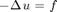 in 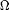 and 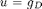 on 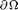 in a crack domain 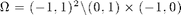 using adaptive finite element method (AFEM). We choose f and g_D such that the exact solution is 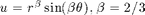 in the polar coordinate.
EXAMPLE Lshape
See also crack, Kellogg
Copyright (C) Long Chen. See COPYRIGHT.txt for details.
close all;
Parameters
maxN = 3e3; theta = 0.5; maxIt = 50; N = zeros(maxIt,1); energy = zeros(maxIt,1); uIuhErrH1 = zeros(maxIt,1);
Generate an initial mesh
[node,elem] = squaremesh([-1,1,-1,1],0.5); [node,elem] = delmesh(node,elem,'x>0 & y<0'); bdFlag = setboundary(node,elem,'Dirichlet');
Set up PDE data
pde.f = 0;
pde.g_D = @exactu;
pde.Du=[];% used for recoverFlux;
pde.d=[];
Adaptive Finite Element Method
SOLVE -> ESTIMATE -> MARK -> REFINE
for k = 1:maxIt % Step 1: SOLVE [u,Duh,eqn] = Poisson(node,elem,pde,bdFlag); % Plot mesh and solution figure(1); showresult(node,elem,u,[-50,12]); % Step 2: ESTIMATE % eta = estimaterecovery(node,elem,u); % recovery type eta = estimateresidual(node,elem,u,pde); % residual type % Record error and number of vertices energy(k) = u'*eqn.Lap*u; uI = exactu(node); uIuhErrH1(k) = sqrt((uI-u)'*eqn.A*(uI-u)); N(k) = size(node,1); if (N(k)>maxN), break; end % Step 3: MARK markedElem = mark(elem,eta,theta); % Step 4: REFINE [node,elem,bdFlag] = bisect(node,elem,markedElem,bdFlag); end
Multigrid V-cycle Preconditioner with Conjugate Gradient Method #dof: 2499, #nnz: 12029, iter: 7, err = 4.9255e-10, time = 0.24 s Multigrid V-cycle Preconditioner with Conjugate Gradient Method #dof: 3350, #nnz: 16152, iter: 7, err = 5.0905e-10, time = 0.32 s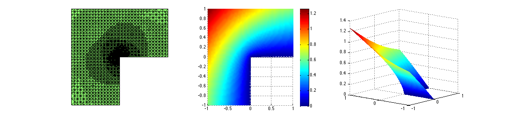
Plot convergence rates
N= N(1:k); uIuhErrH1 = uIuhErrH1(1:k); energyError = sqrt(energy(1:k)-energy(k)); figure; showrate2(N,uIuhErrH1,10,'-*','||Du_I-Du_h||',... N(1:k-1),energyError(1:k-1),10,'k-+','sqrt{(E(u_k)-E(u_i))}');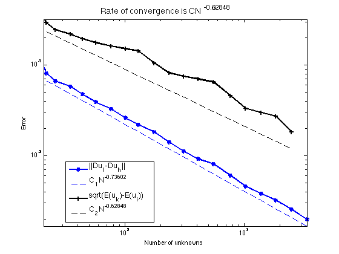
In this example, since f=0, the Dirichlet energy of u is 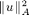. By the minimization of the Galerkin projection, we compute 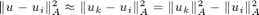.
We also compute the energy norm between the nodal interpolation and the finite element approximation. It is shown that 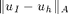 admits convergent rate more than optimal one 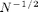. This is known as superconvergence. For a finite element function v, the squared energy norm can be computed as 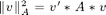.
end % End of function LSHAPE function u = exactu(p) % exact solution r = sqrt(sum(p.^2,2)); theta = atan2(p(:,2),p(:,1)); theta = (theta>=0).*theta + (theta<0).*(theta+2*pi); u = r.^(2/3).*sin(2*theta/3); end